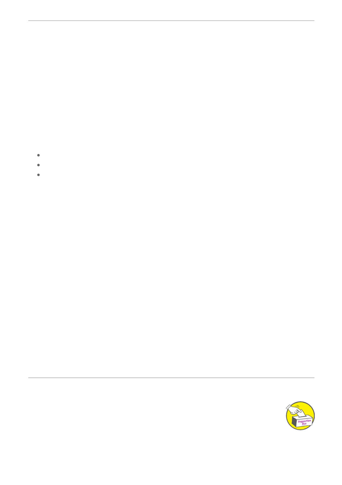

New Beekeeper Checklist
1. Registration
Anyone who owns 1 or more hives of bees in Victoria is required by law to register as a beekeeper
with Department of Agriculture. This can be online for free.
Create a New Login for the Beemax Application.
https://bees.agriculture.vic.gov.au/Home/Registration
2. Understand your Legal obligations as a beekeeper.
The Livestock Disease Control Act 1994 (LDC Act) and Livestock Disease Control Regulations
2017 (Regulations) provide the legal basis for monitoring and control of diseases of bees in Victoria.
Read/understand these important publications as well as Biosecurity Code of Practice, Apiary Code
of Practice. Available to download at https://GBKC.AU/BEC
3. Displaying hive registration details on hives
identify the owners of hives
notify the owners of disease, vandalism, theft and other problems.
The letter and figures must be readable at all times and must not be less than 19 mm high.
4. Conduct regular inspections of your hives
During Spring, Summer and Autumn ideally you should be inspecting your hives every 2 to 3 weeks.
Victorian Beekeepers are required to monitor for Varroa at LEAST 4 times a year.
Conduct Alcohol Wash tests at least as often as required by the Code of Practice.
5. Record inspection and monitoring details after each inspection
The Code of Practice requires detailed notes of your inspections and monitoring to be kept.
You can use BeeMax or own individual system (electronic or paper based)
Record any Mite Checks done on BeeMax website.
https://bees.agriculture.vic.gov.au/Dashboard
Negative (ie no varroa) tests should be recorded to assist AgVic.
6. Be Involved
The Club has its own hives at The Heights. The Heights is a National Trust Victoria Homestead
dating back to 1854 located at 140 Aphrasia Street, Newtown, 3220. New members are particularly
encourged to book a spot at the next hive opening using the club's calendar booking system. This
is a great opportunity to get some hands on experience and learn in a small group enviroment.
Ideal if you just recently joined and want to build confidence.
Attend the club meetings when you can or even document your bee keeping journey for the
newsletter.
All hives must be marked or branded with the beekeeper's registered number (brand) that is printed
on the Certificate of Registration.
Suggestions?
Articles of interest are always welcome.
If you have an article of interest, a photo or a story that you would like included in the
next newsletter, please email: info@gbkc.au